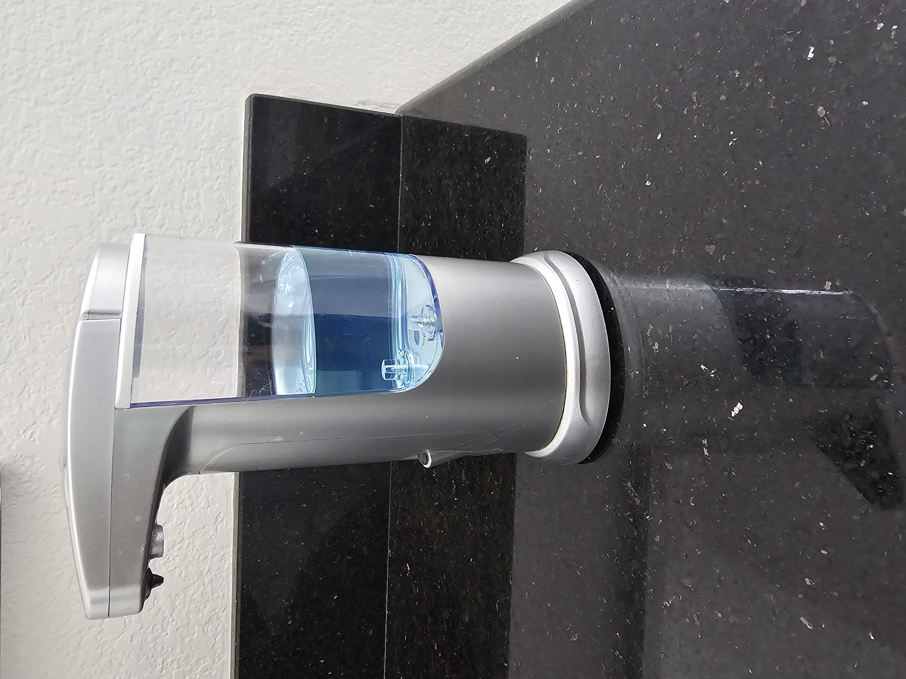

CASE STUDY BETWEEN GOOGLE LENS AND MOBILENET
GOOGLE LENS
VS
MOBILENET
Output of Google Lens - Soup bottle
Output of MOBILENET -Tap

Result - Google Lens is right
Output of Google Lens - Lace shoes
Output of MOBILENET -Running shoes
Result -
Google Lens is more reasonable
Finnlly i tried this at my phone the google lens won 5 times and MOBILENET won 3 with 2 draws but google lens was more faster during the draws